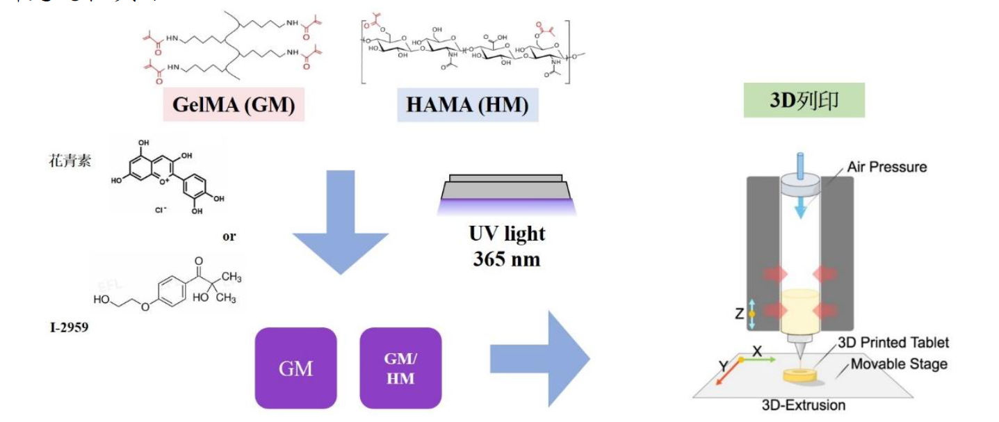

天然花青素光交聯複合水凝膠支架之3D列印研究
鐘莘妮
摘要
本研究於不同比例的甲基丙烯酸明膠（GelMA）及甲基丙烯酸透明質酸（HAMA）中分別加入花青素與光起始劑Irgacure 2959，並使用365nm波長紫外光作為交聯燈源以製備複合水凝膠支架。
利用核磁共振圖譜、傅立葉轉換紅外光譜儀、掃描式顯微鏡及溶脹性測試，確認分子結構及材料特性分析與比較。體外試驗進行細胞相容性測試，測試結果顯示加入花青素的光交聯水凝膠所培養出細胞的毒性比加入Irgacure 2959所培養出細胞的毒性低許多。最後使用3D列印機成功將花青素光交聯水凝膠堆疊列印成三維支架。本研究顯示花青素未來可成為生物3D列印的原料，應用於組織工程領域。
研究目的
（一）合成甲基丙烯酸明膠及甲基丙烯酸透明質酸，並探討其性質
（二）探討以光起始劑I2959、花青素進行光交聯之複合水凝膠性質差異
（三）探討光交聯複合水凝膠之細胞存活率、溶脹率和降解率
（四）嘗試以光交聯複合水凝膠進行3D列印
研究過程與方法
研究成果與展望

（一）透過NMR和FTIR分析檢測，甲基丙烯酸明膠(GelMA)跟甲基丙烯酸透明質酸(HAMA)均已成功合成。
（二）生物相容性測試中，使用CCK-8試劑來測試材料對細胞的毒性，花青素作為交聯劑的組別，細胞存活率明顯高於以I-2959光交聯的組別，並皆高於70%。
（三）使用生物3D列印機配合相應繪圖軟體，設計生醫需求之形狀、規格，成功列印出使用花青素光交聯之複合水凝膠支架。
（四）由各項測試可得知添加花青素的光交聯複合水凝膠，未來可成為生物3D列印的原料，應用於組織工程領域。